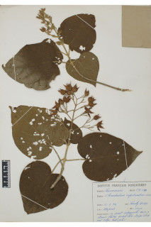

Images :



| Habit : | Large shrubs or small trees ca. 4 m tall. |
| Leaves : | Leaves simple , opposite , decussate ; petiole 2.5-8 cm long , terete , fulvous tomentose ; lamina 7-17 (-23) x 7.5- 15 cm, broad elliptic-ovate or suborbicular , apex acuminate , base cordate , margin entire or dentate , subcoriaceous , fulvous tomentose ; midrib raised with tomentose above; 5-7-nerved at base; secondary_nerves ca. 2-3 pairs; tertiary_nerves distantly and horizontally percurrent . |
| Inflorescence / Flower : | N/A |
| Fruit and Seed : | N/A |